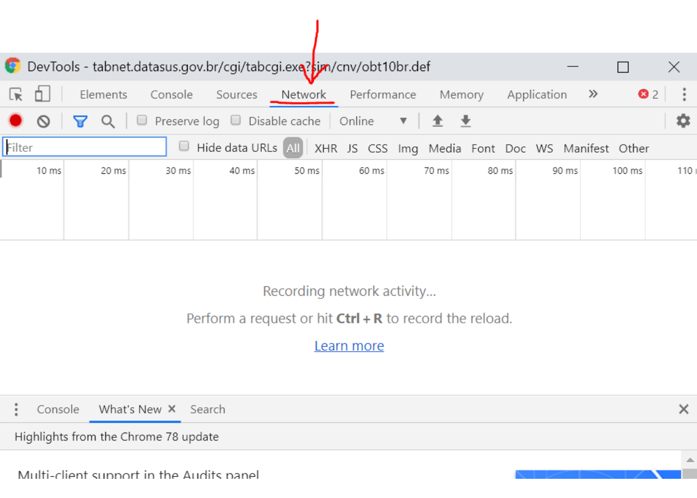

Oficina de Web Scraping (PT)
Este workshop tem como objetivo fazer uma introdução a métodos de web scraping no R e em Python
O que é Web Scraping?
web scraping, web harvesting etc são processos automatizados para extrair dados de websites, utilizando bots ou web crawlers. Na maior parte das vezes, programas de web scraping acessam a World Wide Web diretamente, utilizando Hypertext Transfer Protocol (HTTP)
HTTP
Base da web moderna, permite a comunicação entre uma variedade de hosts e clients. Essa comunicação ocorre por meio de um par request/response. O client inicia uma mensagem de request HTTP, que é atendida por uma mensagem de resposta HTTP. Os requests são geralmente enviados via Uniform Resource Locators (URLs)
O URL revela a identidade do Host que queremos nos comunicar, mas a ação que queremos executar neste host é especificada pelos verbos HTTP (aqui apenas listei os verbos relevantes para web scraping, existem diversos outros):
GET
busca por um recurso existente. O URL contém todas as informações necessárias para o servidor localizar e retornar ao recurso.
POST
cria um novo recurso. Um POST request geralmente carrega informações que especificam dados para um novo recurso.
HTML
Hypertext Markup Language (HTML) é a linguagem de marcação de documentos feitos para serem visualizados num web browser. O HTML descreve a estrutura semântica de uma web page e, na maior parte dos sites, é combinado com tecnologias como CSS e linguagens como JavaScript, que formatam a visualização do site.
Quando raspamos o conteúdo de um site, estamos raspando informações da estrutura semântica e, portanto, é importante entender algo de html. Para auxiliar nesse processo recomendo duas coisas:
- inspecionar os sites que queremos respar no web browser (ctrl + shift i)
- instalar a extensão selector gadget
Web scraping com R
Para raspar dados da web, dois pacotes são essenciais:
httr: permite trabalhar com HTTP requests e está organizado pelos verbosrvest: pacote auxiliar ao httr que facilita o download e a manipulação de HTML
#install.packages("httr")
#install.packages("rvest")
library(httr)
library(rvest)httr::GET
Quando acessamos um URL estamos realizando um GET request. A função do pacote httr que realiza esse request é a função GET. Devemos utilizar essa função quando queremos raspar informações de um site como ele é. Por exemplo:
site <- httr::GET("https://ieps.org.br/pessoas/equipe-ieps/")
pessoas <- httr::content(site, encoding = "UTF-8") %>%
rvest::html_nodes("h3") %>%
rvest::html_text() %>%
trimws()
cargo <- httr::content(site, encoding = "UTF-8") %>%
rvest::html_nodes("h4") %>%
rvest::html_text() %>%
trimws()
cv <- httr::content(site, encoding = "UTF-8") %>%
rvest::html_nodes("p") %>%
rvest::html_text() %>%
trimws()
cv<-cv[2:10]
pessoas <- pessoas[1:length(cv)]
cargo <- cargo[1:length(cv)]
equipe_ieps <- cbind.data.frame(pessoas, cargo, cv)
kable(equipe_ieps)| pessoas | cargo | cv |
|---|---|---|
| Miguel Lago | Diretor-Executivo | Cientista político formado em Sciences Po Paris, é mestre em administração pública pela mesma instituição. Fundou e presidiu a rede de mobilização Meu Rio e o Nossas, laboratório referência em civic-tech na América Latina. É professor visitante da School of International and Public Affairs da Universidade de Columbia em Nova York e da École d’Affaires Publiques de Sciences Po Paris. |
| Rudi Rocha | Coordenador de Pesquisa | Possui graduação e mestrado em economia (UFRJ) e doutorado em economia (PUC-Rio). É professor associado da Escola de Administração de Empresas de São Paulo (FGV EAESP), bolsista de produtividade do CNPq, e vencedor de prêmios e grants internacionais, como o Newton Advanced Fellowship (Academia Britânica) e o Grand Challenges Explorations (Fundação Bill & Melinda Gates). É professor adjunto licenciado do IE-UFRJ (2012/2017-), foi pesquisador associado ao ESRC Research Centre on Micro-Social Change (2015-2019), vice-presidente da Sociedade Brasileira de Econometria (2014-2015) e coordenador brasileiro da LACEA/IADB/World Bank/UNDP Research Network on Inequality and Poverty (2004-2008). |
| Rodrigo Fiães | Diretor Administrativo-Financeiro | Rodrigo Fiães é economista formado pela PUC-Rio, com mestrado pela London School of Economics and Political Science (LSE). Foi sócio da Gávea Investimentos (2004-15) e trabalhou em diversas instituições, privadas e públicas, nas áreas de finanças, pesquisas econômicas e políticas públicas. A partir de 2014, tem se dedicado ao 3º setor. Em particular, participou da concepção, montagem e início de operações de duas associações civis sem fins lucrativos (Instituto Serrapilheira, IEPS) e é vice-presidente do Conselho de Administração do Instituto Clima e Sociedade (iCS). |
| Beatriz Rache | Pesquisadora Economia da Saúde | Beatriz Rache trabalhou com temas de pesquisa variados, de educação superior a pequenos negócios, sempre usando a análise de dados e econometria para auxílio à tomada de decisões. Um de seus principais interesses é estudar a desigualdade de oportunidades no Brasil do ponto de vista das políticas públicas, de forma a ajudar a amenizá-la. Foi Research Associate no JPMorgan Chase Institute, um think tank em Washington DC, Economista Júnior na Gávea Investimentos, no Rio de Janeiro, e Assistente de Pesquisa no Climate Policy Initiative e na PUC-Rio. É formada em Economia pela PUC-Rio, com mestrado em Economia pela Columbia University, em Nova York. |
| Letícia Nunes | Pesquisadora Economia da Saúde | Letícia Nunes possui mestrado e doutorado em Economia pela EPGE/FGV. Foi pesquisadora visitante da Universidade de Northwestern (Departamento de Economia) durante os anos de 2016 e 2017. Sua pesquisa concentra-se nas interseções de Economia da Saúde, Desenvolvimento Econômico e Organização Industrial. |
| Helena Ciorra | Assistente Administrativo | Formada em Letras pela Universidade de São Paulo, com ênfase em línguas orientais. Premiada duas vezes no Concurso de Ensaios de Literatura Coreana do Literature Translation Institute (LTI-Korea). Trabalha há mais de 10 anos com revisão e tradução de textos, e desde 2016 atua como assistente na área de pesquisas acadêmicas. |
| Arthur Aguillar | Pesquisador Políticas Públicas | Economista formado pela PUC-Rio, e mestre em desenvolvimento internacional pela Harvard University, Arthur Aguillar dedica-se a fronteira entre a gestão pública e a pesquisa aplicada. Coordenou projetos de pesquisa e avaliações de impacto em saúde e educação no Brasil, Índia e Moçambique, colaborando com o JPAL, a London School of Economics e o ASER/Pratham. Foi coordenador de Projetos e Avaliação da Escola de Inovação e Políticas Públicas do Ministério da Educação, onde foi responsável por apoiar o Plano Regional de Desenvolvimento do Nordeste, e desenvolver programas de capacitação voltados para os governos municipais e estaduais da região. |
| Helyn Thami | Pesquisadora Políticas Públicas | Graduada em Odontologia pela UFRJ / Queen Mary University of London, com Residência em Saúde da Família pela Escola Nacional de Saúde Pública (ENSP-Fiocruz), e Mestrado em Gestão e Políticas Públicas em Saúde pela University of Birmingham, Inglaterra (bolsista do Programa Chevening, do governo Britânico). Tem experiência internacional em análise de implementação de políticas públicas em saúde e desenvolvimento organizacional em saúde nos casos Brasileiro, Britânico e Uruguaio. Fez aperfeiçoamento em Análise de Políticas Públicas pela University of California, Berkeley, Estados Unidos. Obteve o 2º lugar no Prêmio SwB Ambassador, oferecido pelo British Council e Embaixada Britânica no Brasil, em reconhecimento ao impacto resultante da experiência de intercâmbio no biênio 2012/2013 (prêmio recebido em 2016). |
| Thaisa Marques | Analista Administrativo | Graduada em Ciências Contábeis, atua desde 2015 no campo das organizações sem fins lucrativos (até recentemente no Instituto Brasileiro de Análises Sociais e Econômicas – Ibase) nas áreas financeira, administrativa, trabalhista e contábil, com ênfase na Gestão de Projetos e Tesouraria. |
a função httr::GET realiza um GET request ao site do IEPS, que em seguida atribui ao objeto site a HTTP response; httr::content define o enconding que será utilizado; rvest::html_nodes seleciona o nódulo html que se deseja raspar; rvest::html_text extrai o texto do nódulo selecionado; trimws() apenas remove espaços em branco desnecessários
Qual elemento HTML raspar?
Descobrindo qual elemento html representa a informação quer queremos:
Inspecionar
Selector Gadget
httr::POST
Quando necessitamos enviar algum dado ao servidor para que este retorne e informação que desejamos, estamos executando um POST request. A função POST do pacote httr realiza este request. Este tipo de request é usual em sites como TABNET Datasus, no qual escolhemos os parâmetros e em seguida o site retorna uma outra página com a informação que desejamos. Como exemplo, utilizaremos o TABNET SIM.
ano <- "obtbr17"
form_data <- paste0("Linha=Munic%EDpio&
Coluna=Faixa_Et%E1ria&
Incremento=%D3bitos_p%2FOcorr%EAnc&
Arquivos=",ano,".dbf&
pesqmes1=Digite+o+texto+e+ache+f%E1cil&
SMunic%EDpio=TODAS_AS_CATEGORIAS__&
pesqmes2=Digite+o+texto+e+ache+f%E1cil&
SCapital=TODAS_AS_CATEGORIAS__&
pesqmes3=Digite+o+texto+e+ache+f%E1cil&
SRegi%E3o_de_Sa%FAde_%28CIR%29=TODAS_AS_CATEGORIAS__&
pesqmes4=Digite+o+texto+e+ache+f%E1cil&
SMacrorregi%E3o_de_Sa%FAde=TODAS_AS_CATEGORIAS__&
pesqmes5=Digite+o+texto+e+ache+f%E1cil&
SMicrorregi%E3o_IBGE=TODAS_AS_CATEGORIAS__&
pesqmes6=Digite+o+texto+e+ache+f%E1cil&
SRegi%E3o_Metropolitana_-_RIDE=TODAS_AS_CATEGORIAS__&
pesqmes7=Digite+o+texto+e+ache+f%E1cil&
STerrit%F3rio_da_Cidadania=TODAS_AS_CATEGORIAS__&
pesqmes8=Digite+o+texto+e+ache+f%E1cil&
SMesorregi%E3o_PNDR=TODAS_AS_CATEGORIAS__&
SAmaz%F4nia_Legal=TODAS_AS_CATEGORIAS__&
SSemi%E1rido=TODAS_AS_CATEGORIAS__&
SFaixa_de_Fronteira=TODAS_AS_CATEGORIAS__&
SZona_de_Fronteira=TODAS_AS_CATEGORIAS__&
SMunic%EDpio_de_extrema_pobreza=TODAS_AS_CATEGORIAS__&
pesqmes14=Digite+o+texto+e+ache+f%E1cil&
SCap%EDtulo_CID-10=TODAS_AS_CATEGORIAS__&
pesqmes15=Digite+o+texto+e+ache+f%E1cil&
SGrupo_CID-10=TODAS_AS_CATEGORIAS__&
pesqmes16=Digite+o+texto+e+ache+f%E1cil&SCategoria_CID-10=1850&
SCategoria_CID-10=1851&
SCategoria_CID-10=1852&
SCategoria_CID-10=1853&
SCategoria_CID-10=1854&
SCategoria_CID-10=1855&
SCategoria_CID-10=1856&
SCategoria_CID-10=1857&
SCategoria_CID-10=1858&
SCategoria_CID-10=1859&
SCategoria_CID-10=1860&
SCategoria_CID-10=1861&
SCategoria_CID-10=1862&
SCategoria_CID-10=1863&
SCategoria_CID-10=1864&
SCategoria_CID-10=1865&
SCategoria_CID-10=1866&
SCategoria_CID-10=1867&
SCategoria_CID-10=1868&
SCategoria_CID-10=1869&
SCategoria_CID-10=1870&
SCategoria_CID-10=1871&
SCategoria_CID-10=1872&
SCategoria_CID-10=1873&
SCategoria_CID-10=1874&
pesqmes17=Digite+o+texto+e+ache+f%E1cil&
SCausa_-_CID-BR-10=TODAS_AS_CATEGORIAS__&
SCausa_mal_definidas=TODAS_AS_CATEGORIAS__&
pesqmes19=Digite+o+texto+e+ache+f%E1cil&
SFaixa_Et%E1ria=TODAS_AS_CATEGORIAS__&
pesqmes20=Digite+o+texto+e+ache+f%E1cil&
SFaixa_Et%E1ria_OPS=TODAS_AS_CATEGORIAS__&
pesqmes21=Digite+o+texto+e+ache+f%E1cil&
SFaixa_Et%E1ria_det=TODAS_AS_CATEGORIAS__&
SFx.Et%E1ria_Menor_1A=TODAS_AS_CATEGORIAS__&
SSexo=TODAS_AS_CATEGORIAS__&
SCor%2Fra%E7a=TODAS_AS_CATEGORIAS__&
SEscolaridade=TODAS_AS_CATEGORIAS__&
SEstado_civil=TODAS_AS_CATEGORIAS__&
SLocal_ocorr%EAncia=TODAS_AS_CATEGORIAS__&
formato=table&
mostre=Mostra")
site <- httr::POST(url = "http://tabnet.datasus.gov.br/cgi/tabcgi.exe?sim/cnv/obt10br.def",
body = form_data, timeout(20))
tabdados <- httr::content(site, encoding = "Latin1") %>%
rvest::html_nodes(".tabdados tbody tr td") %>%
rvest::html_text() %>%
trimws()
col_tabdados <- httr::content(site, encoding = "Latin1") %>%
rvest::html_nodes("th")%>%
rvest::html_text() %>%
trimws()
f1 <- function(x) x <- gsub("\\.", "", x)
f2 <- function(x) x <- as.numeric(as.character(x))
df <- as.data.frame(matrix(data = tabdados, nrow = length(tabdados)/length(col_tabdados), ncol = length(col_tabdados), byrow = TRUE))
names(df) <- col_tabdados
df[-1] <- lapply(df[-1], f1)
df[-1] <- suppressWarnings(lapply(df[-1], f2))
df[is.na(df)] <- 0
df<- df[1:20,]
kable(df)| Município | Menor 1 ano | 1 a 4 anos | 5 a 9 anos | 10 a 14 anos | 15 a 19 anos | 20 a 29 anos | 30 a 39 anos | 40 a 49 anos | 50 a 59 anos | 60 a 69 anos | 70 a 79 anos | 80 anos e mais | Idade ignorada | Total |
|---|---|---|---|---|---|---|---|---|---|---|---|---|---|---|
| TOTAL | 99 | 103 | 93 | 638 | 10569 | 23742 | 14369 | 6989 | 3654 | 1601 | 684 | 241 | 966 | 63748 |
| 110001 Alta Floresta D’Oeste | 0 | 0 | 0 | 0 | 0 | 2 | 1 | 0 | 0 | 0 | 0 | 0 | 1 | 4 |
| 110040 Alto Paraíso | 0 | 0 | 0 | 0 | 2 | 3 | 1 | 2 | 2 | 0 | 0 | 0 | 1 | 11 |
| 110002 Ariquemes | 0 | 0 | 0 | 1 | 9 | 20 | 10 | 6 | 4 | 0 | 1 | 0 | 0 | 51 |
| 110045 Buritis | 0 | 0 | 0 | 0 | 3 | 4 | 4 | 5 | 1 | 1 | 0 | 0 | 1 | 19 |
| 110003 Cabixi | 0 | 0 | 0 | 0 | 2 | 3 | 0 | 0 | 0 | 0 | 0 | 0 | 0 | 5 |
| 110060 Cacaulândia | 0 | 0 | 0 | 0 | 0 | 1 | 0 | 0 | 0 | 0 | 0 | 0 | 0 | 1 |
| 110004 Cacoal | 0 | 0 | 0 | 1 | 0 | 7 | 8 | 3 | 3 | 0 | 1 | 0 | 0 | 23 |
| 110070 Campo Novo de Rondônia | 0 | 0 | 0 | 0 | 0 | 0 | 0 | 3 | 0 | 0 | 0 | 0 | 0 | 3 |
| 110080 Candeias do Jamari | 0 | 0 | 0 | 0 | 1 | 3 | 2 | 3 | 2 | 2 | 0 | 0 | 0 | 13 |
| 110090 Castanheiras | 0 | 0 | 0 | 0 | 0 | 0 | 0 | 0 | 0 | 1 | 0 | 0 | 0 | 1 |
| 110005 Cerejeiras | 0 | 0 | 0 | 0 | 1 | 1 | 1 | 1 | 0 | 0 | 0 | 0 | 0 | 4 |
| 110092 Chupinguaia | 0 | 0 | 0 | 0 | 1 | 1 | 3 | 1 | 0 | 0 | 0 | 0 | 0 | 6 |
| 110006 Colorado do Oeste | 0 | 0 | 0 | 0 | 0 | 1 | 0 | 0 | 1 | 0 | 0 | 0 | 0 | 2 |
| 110008 Costa Marques | 0 | 0 | 0 | 0 | 0 | 0 | 0 | 2 | 0 | 0 | 0 | 0 | 0 | 2 |
| 110094 Cujubim | 0 | 0 | 0 | 0 | 0 | 1 | 0 | 1 | 0 | 0 | 0 | 0 | 0 | 2 |
| 110009 Espigão D’Oeste | 0 | 0 | 0 | 0 | 0 | 0 | 2 | 1 | 1 | 1 | 0 | 1 | 0 | 6 |
| 110100 Governador Jorge Teixeira | 0 | 0 | 0 | 0 | 0 | 0 | 1 | 0 | 0 | 0 | 0 | 0 | 0 | 1 |
| 110010 Guajará-Mirim | 0 | 0 | 0 | 0 | 2 | 0 | 0 | 1 | 1 | 1 | 0 | 0 | 0 | 5 |
| 110110 Itapuã do Oeste | 0 | 0 | 0 | 0 | 1 | 1 | 2 | 0 | 0 | 0 | 0 | 0 | 0 | 4 |
O objeto form_data contém os dados que enviamos ao servidor (POST). Abaixo veremos como saber qual informação enviar. A função httr::POST é muito semelhante à httr::GET que mostramos acima. Além do URL que queremos acessar, adicionamos as informações que queremos postar para o servidor body =. A função timeout apenas define o tempo de espera (em segundos) ao tentar acessar o site. Como o servidor do DATASUS é muitas vezes lento, é bom definir uma espera maior que a default.
Qual informação enviar ao servidor?
- Devemos acessar o site e inspecionar, e acessar a aba network e apertar
Ctrl + Rpara iniciar uma gravação da comunicação via HTTP.

uma vez que a comunicação HTTP está sendo gravada, devemos voltar a página do TABNET, escolher as opções desejadas e clicar no botão Mostra para acessar os dados.
Em seguida, voltamos à aba network, clicamos no objeto que contém parte do URL que fizemos o request.
- O último ítem, Form Data, contém toda informação enviada pelo formulário que necessitamos para fazer um POST request pelo R
Como fazer um loop quando precisamos realizar vários POSTs?
Podemos criar um loop que altera parâmetros do form data. Como saber quais parâmetros alterar? e pelo o que alterar? O ideal é inspecionar o parâmetro que desejamos loopar na página inicial verificar qual o nome dado na estrutura html

ano_html <- c("obtbr96","obtbr97","obtbr98","obtbr99","obtbr00","obtbr01","obtbr02","obtbr03","obtbr04","obtbr05","obtbr06","obtbr07","obtbr08","obtbr09","obtbr10","obtbr11","obtbr12","obtbr13","obtbr14","obtbr15","obtbr16","obtbr17")
for (ano in ano_html){
form_data <- paste0("Linha=Munic%EDpio&
Coluna=Faixa_Et%E1ria&
Incremento=%D3bitos_p%2FOcorr%EAnc&
Arquivos=",ano,".dbf&
pesqmes1=Digite+o+texto+e+ache+f%E1cil&
SMunic%EDpio=TODAS_AS_CATEGORIAS__&
pesqmes2=Digite+o+texto+e+ache+f%E1cil&
SCapital=TODAS_AS_CATEGORIAS__&
pesqmes3=Digite+o+texto+e+ache+f%E1cil&
SRegi%E3o_de_Sa%FAde_%28CIR%29=TODAS_AS_CATEGORIAS__&
pesqmes4=Digite+o+texto+e+ache+f%E1cil&
SMacrorregi%E3o_de_Sa%FAde=TODAS_AS_CATEGORIAS__&
pesqmes5=Digite+o+texto+e+ache+f%E1cil&
SMicrorregi%E3o_IBGE=TODAS_AS_CATEGORIAS__&
pesqmes6=Digite+o+texto+e+ache+f%E1cil&
SRegi%E3o_Metropolitana_-_RIDE=TODAS_AS_CATEGORIAS__&
pesqmes7=Digite+o+texto+e+ache+f%E1cil&
STerrit%F3rio_da_Cidadania=TODAS_AS_CATEGORIAS__&
pesqmes8=Digite+o+texto+e+ache+f%E1cil&
SMesorregi%E3o_PNDR=TODAS_AS_CATEGORIAS__&
SAmaz%F4nia_Legal=TODAS_AS_CATEGORIAS__&
SSemi%E1rido=TODAS_AS_CATEGORIAS__&
SFaixa_de_Fronteira=TODAS_AS_CATEGORIAS__&
SZona_de_Fronteira=TODAS_AS_CATEGORIAS__&
SMunic%EDpio_de_extrema_pobreza=TODAS_AS_CATEGORIAS__&
pesqmes14=Digite+o+texto+e+ache+f%E1cil&
SCap%EDtulo_CID-10=TODAS_AS_CATEGORIAS__&
pesqmes15=Digite+o+texto+e+ache+f%E1cil&
SGrupo_CID-10=TODAS_AS_CATEGORIAS__&
pesqmes16=Digite+o+texto+e+ache+f%E1cil&SCategoria_CID-10=1850&
SCategoria_CID-10=1851&SCategoria_CID-10=1852&
SCategoria_CID-10=1853&SCategoria_CID-10=1854&
SCategoria_CID-10=1855&SCategoria_CID-10=1856&
SCategoria_CID-10=1857&SCategoria_CID-10=1858&
SCategoria_CID-10=1859&SCategoria_CID-10=1860&
SCategoria_CID-10=1861&SCategoria_CID-10=1862&
SCategoria_CID-10=1863&SCategoria_CID-10=1864&
SCategoria_CID-10=1865&SCategoria_CID-10=1866&
SCategoria_CID-10=1867&SCategoria_CID-10=1868&
SCategoria_CID-10=1869&SCategoria_CID-10=1870&
SCategoria_CID-10=1871&SCategoria_CID-10=1872&
SCategoria_CID-10=1873&SCategoria_CID-10=1874&
pesqmes17=Digite+o+texto+e+ache+f%E1cil&
SCausa_-_CID-BR-10=TODAS_AS_CATEGORIAS__&
SCausa_mal_definidas=TODAS_AS_CATEGORIAS__&
pesqmes19=Digite+o+texto+e+ache+f%E1cil&
SFaixa_Et%E1ria=TODAS_AS_CATEGORIAS__&
pesqmes20=Digite+o+texto+e+ache+f%E1cil&
SFaixa_Et%E1ria_OPS=TODAS_AS_CATEGORIAS__&
pesqmes21=Digite+o+texto+e+ache+f%E1cil&
SFaixa_Et%E1ria_det=TODAS_AS_CATEGORIAS__&
SFx.Et%E1ria_Menor_1A=TODAS_AS_CATEGORIAS__&
SSexo=TODAS_AS_CATEGORIAS__&
SCor%2Fra%E7a=TODAS_AS_CATEGORIAS__&
SEscolaridade=TODAS_AS_CATEGORIAS__&
SEstado_civil=TODAS_AS_CATEGORIAS__&
SLocal_ocorr%EAncia=TODAS_AS_CATEGORIAS__&
formato=table&mostre=Mostra")
}Web scraping com Python/Selenium
Nem todos os sites são simples de raspar. Muitos são construidos de formas mais modernas e interativas e não basta realizar um POST Request para acessar os dados que desejamos. Nesses casos, o Selenium pode ser uma boa alternativa. Dentre as diversas funções, esse pacote permite automatizar um Web Browser.
Para exemplificar sua funcionalidade, utilizarei o Selenium para raspar o mesmo site que raspamos com o R.
Antes de utilizar o Selenium é importante fazer download de algum webdriver e salvá-lo no diretório de trabalho. Nesse exemplo utilizarei o webdriver do Chrome, Chromedriver
Em seguida, programamos o Selenium para acessar o site do TABNET SIM, selecionar os campos do formulario que desejamos e enviar o formulário.
import selenium
from selenium import webdriver
from selenium.webdriver.common.keys import Keys
from selenium.webdriver.support.ui import WebDriverWait
from selenium.webdriver.common.by import By
from selenium.common.exceptions import TimeoutException
url = "http://tabnet.datasus.gov.br/cgi/tabcgi.exe?sim/cnv/obt10br.def"
# download chromedriver from "https://sites.google.com/a/chromium.org/chromedriver/" into your working directory.
driver = webdriver.Chrome("C:/Users/Michel/Google Drive/DOUTORADO FGV/IEPS/web_scraping_workshop/chromedriver")
# setting driver options
chrome_options = webdriver.ChromeOptions()
prefs = {'download.default_directory' : 'C:/Users/Michel/Google Drive/DOUTORADO FGV/IEPS/web_scraping_workshop'}
chrome_options.add_experimental_option('prefs', prefs)
driver = webdriver.Chrome(chrome_options=chrome_options)
driver.set_page_load_timeout(10)
# GET request
driver.get(url)
# Driver "behavior"
# ============================================================
# linha
driver.find_element_by_xpath('//*[@id="L"]/option[1]').click()
# coluna
driver.find_element_by_xpath('//*[@id="C"]/option[7]').click()
# Conteúdo
driver.find_element_by_xpath('//*[@id="I"]/option[1]').click()
driver.find_element_by_xpath('//*[@id="I"]/option[2]').click()
# Periodo
driver.find_element_by_xpath('//*[@id="A"]/option[1]').click()
driver.find_element_by_xpath('//*[@id="A"]/option[1]').click()
# CID-10
driver.find_element_by_xpath('//*[@id="fig16"]').click()
driver.find_element_by_xpath('//*[@id="S16"]/option[1]').click()
driver.find_element_by_xpath('//*[@id="S16"]/option[1851]').click()
driver.find_element_by_xpath('//*[@id="S16"]/option[1852]').click()
driver.find_element_by_xpath('//*[@id="S16"]/option[1853]').click()
driver.find_element_by_xpath('//*[@id="S16"]/option[1854]').click()
driver.find_element_by_xpath('//*[@id="S16"]/option[1855]').click()
driver.find_element_by_xpath('//*[@id="S16"]/option[1856]').click()
driver.find_element_by_xpath('//*[@id="S16"]/option[1857]').click()
driver.find_element_by_xpath('//*[@id="S16"]/option[1858]').click()
driver.find_element_by_xpath('//*[@id="S16"]/option[1859]').click()
driver.find_element_by_xpath('//*[@id="S16"]/option[1860]').click()
driver.find_element_by_xpath('//*[@id="S16"]/option[1861]').click()
driver.find_element_by_xpath('//*[@id="S16"]/option[1862]').click()
driver.find_element_by_xpath('//*[@id="S16"]/option[1863]').click()
driver.find_element_by_xpath('//*[@id="S16"]/option[1864]').click()
driver.find_element_by_xpath('//*[@id="S16"]/option[1865]').click()
driver.find_element_by_xpath('//*[@id="S16"]/option[1866]').click()
driver.find_element_by_xpath('//*[@id="S16"]/option[1867]').click()
driver.find_element_by_xpath('//*[@id="S16"]/option[1868]').click()
driver.find_element_by_xpath('//*[@id="S16"]/option[1869]').click()
driver.find_element_by_xpath('//*[@id="S16"]/option[1870]').click()
driver.find_element_by_xpath('//*[@id="S16"]/option[1871]').click()
driver.find_element_by_xpath('//*[@id="S16"]/option[1872]').click()
driver.find_element_by_xpath('//*[@id="S16"]/option[1873]').click()
driver.find_element_by_xpath('//*[@id="S16"]/option[1874]').click()
driver.find_element_by_xpath('//*[@id="S16"]/option[1875]').click()
# Mostra
driver.find_element_by_xpath('/html/body/div/div/center/div/form/div[4]/div[2]/div[2]/input[1]').click()
html = driver.page_source
driver.quit()Para selecionar os campos, copiei os xpaths exatos dos campos e utilizei duas funções: find_element_by_xpath('qualquer xpath') para encontrar o xpath e click() para clicar no elemento encontrado. Esse site descreve em detalhes como utilizar Selenium com Python e todas suas funcionalidades.

Beautiful Soup
Semelhante ao pacote rvest no R, o Beautiful Soup facilita o download e manipulação de HTML.
Ao fim do código anterior, atribuímos todo html da página final acessada pelo Selenium ao objeto html. Utilizaremos o Beautiful Soup para extrair apenas as partes de html que desejamos (os dados da tabela e títulos das colunas)
from bs4 import BeautifulSoup
soup = BeautifulSoup(html, 'html.parser')
tabdados = soup.select(".tabdados tbody tr td")
tabdados = list(map(lambda node: node.get_text().strip(), tabdados))
col_tabdados = soup.select(".tabdados th")
col_tabdados = list(map(lambda node: node.get_text().strip(), col_tabdados))A primeira etapa é atribuir ao objeto soup o objeto html computado pelo Beautiful Soup para que possamos utilizar as funções do pacote. A função select seleciona partes do html. Repare que nesse caso estamos utilizando o mesmo css selector que utilizamos na raspagem com o R.
Em Python, utilizamos lambda para criar uma in line function. A função criada extrai o texto do nódulo html selecionado (get_text) e retira os espaços em branco (strip). A função map é utilizada para aplicar uma função a diversos elementos simultaneamente e retorna um map object e a função list para converter esse map object em um list object.
Em seguida utilizamos funções básicas do pacote numpy para transformar os objetos de lista em um data frame:
import numpy
len_tabdados = len(tabdados)
len_col_tabdados = len(col_tabdados)
nrow = int(len_tabdados/len_col_tabdados)
ncol = int(len_col_tabdados)
df_names = numpy.array(col_tabdados).reshape(1,ncol)
df = numpy.array(tabdados).reshape(nrow,ncol)
df = numpy.vstack([df_names, df])
numpy.savetxt("C:/Users/Michel/Google Drive/DOUTORADO FGV/IEPS/web_scraping_workshop/selenium_sim.csv", df, delimiter=",", fmt='%s')Outras ferramentas úteis para programação
Editor de texto
Pode facilitar muito o processo de programação, em especial quando programamos em algumas linguagens, trabalhar com um editor de texto único que suporta diversas linguagens. De forma geral, os editores possuem synthax highlighting, code completion, atalhos de teclado e são altamente customizáveis.
Para quem trabalha com Stata, R, Python, minha sugestão é utilizar o Visual Code Studio
Algumas outras alternativas são: Atom, Sublime Text
Rmarkdown
O Rmarkdown permite escrever documentos completamente reproduzíveis e suporta diversos formatos de output, como HTML, PDF, MS Word, Beamer, HTML5 slides, etc. Essa oficina foi escrita em RMarkdown, acesse o código aqui.